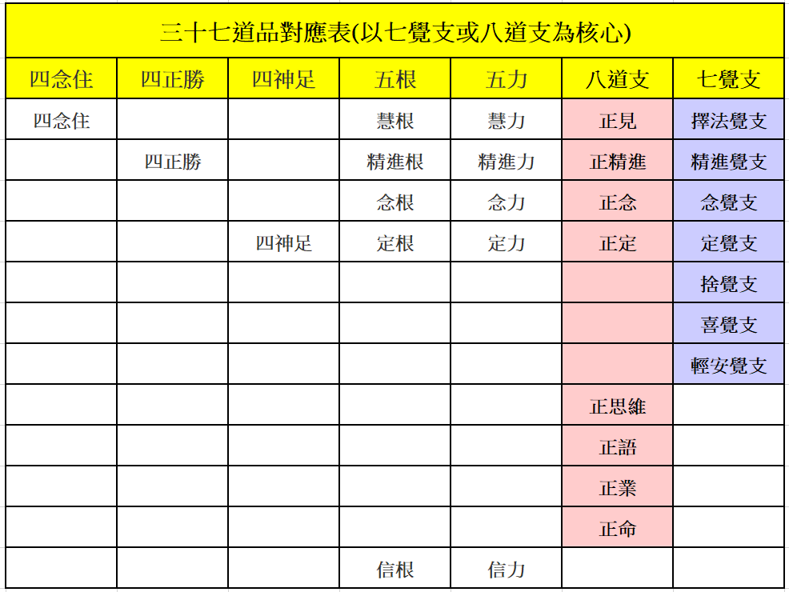
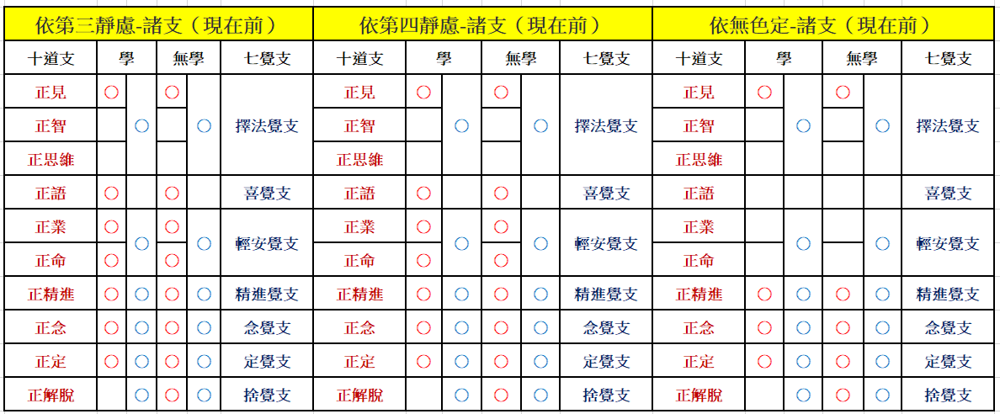

| |
問：菩提分法，名有三十七，實體有幾耶？
答：此實體，有十一或十二。
【餘道品攝入七覺支】
若以一切「攝入覺支」，即「七覺支」，名既有七，實體亦七。
●信、正思惟：各唯一種。
●正語、業、命： 若說為二（正命即是正語、業故），即唯十一。 若說為三（正語、業外，有正命故），則有十二。
●四念住、慧根、慧力、正見→攝入擇法覺支。
●四正勝、精進根、精進力、正勤→攝入精進覺支。
●四神足、定根、定力、正定→攝入定覺支。
●念根、念力、正念→攝入念覺支。
●信根、信力→合為信故。 |
| |
【餘道品攝入八道支】
若以一切「攝入道支」，即「八道支」，名雖有八，實體不定！ 若說正念即正語、業，實體唯七；若說正命非正語、業，實體有八。
●復有信、喜、輕安、捨四，故亦十一、或有十二，所以者何？
●四念住、慧根、慧力、擇法覺支→攝入正見。
●四正勝、精進根、精進力、精進覺支→攝入正勤。
●四神足、定根、定力、定覺支→攝入正定。
●念根、念力、念覺支→攝入正念。
●信根、信力→合為一信故。 |
|  |
 |
| |
問：何故名「念住」，乃至「道支」耶？
答：●由念勢力，折除自體，故名「念住」。（自體即是有漏五蘊，要由念住，折除彼故。）
●於正持策身、語、意中，此最為勝，故名「正勝」、或名「正斷」。
●於正修習斷修法時，能斷懈怠，故名「正斷」。
●能為神妙功德所依，故名「神足」。
●勢用增上，故名為「根」。
●難可摧制，故名為「力」。
●助如實覺，故名「覺支」。
●助正求趣，故名「道支」。 |
| |
問：何故先說四念住，乃至後說八道支耶？
答： 「四念住」從初業地乃至盡、無生智，勢用常勝，是故先說。
「四正勝」從煖乃至盡、無生智，勢用常勝，是故次說。
「四神足」從頂乃至盡、無生智，勢用常勝，是故次說。
「五根」從忍乃至盡、無生智，勢用常勝，是故次說。
「五力」從世第一法乃至盡、無生智，勢用常勝，是故次說。
「八道支」見道中勝；「七覺支」修道中勝。 |
|
|
| |
●「學」為八道支；「無學」為十道支，增「正智」、「正解脫」。
●若依「未至定」：「學」六覺支、八道支-現在前；「無學」六覺支、九道支-現在前。
●若依「初靜慮」：「學」七覺支、八道支-現在前；「無學」七覺支、九道支-現在前。
●若依「靜慮中間」：「學」六覺支、七道支-現在前；「無學」六覺支、八道支-現在前。
●若依「第二靜慮」：「學」七覺支、七道支現在前；「無學」七覺支、八道支現在前。 |
|
| |
| |
●若依「第三靜慮」：「學」六覺支、七道支-現在前；「無學」六覺支、八道支-現在前。
●若依「第四靜慮」：「學」六覺支、七道支-現在前；「無學」六覺支、八道支-現在前。
●若依「無色定」：「學」六覺支、四道支現在前；「無學」六覺支、五道支現在前。 |
|  |